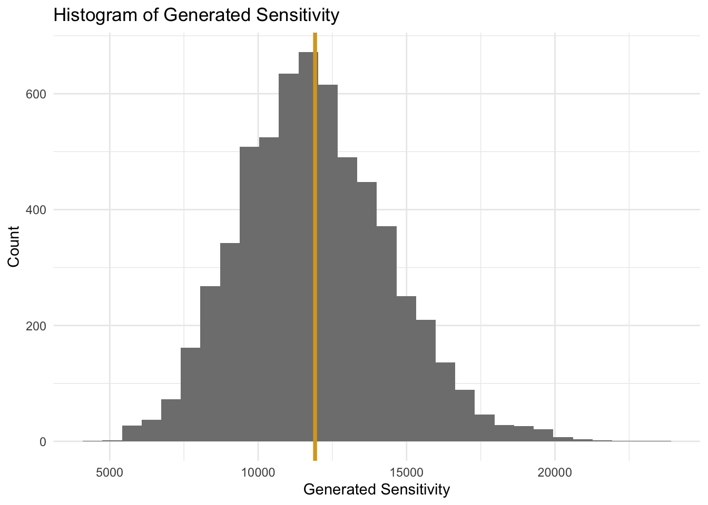
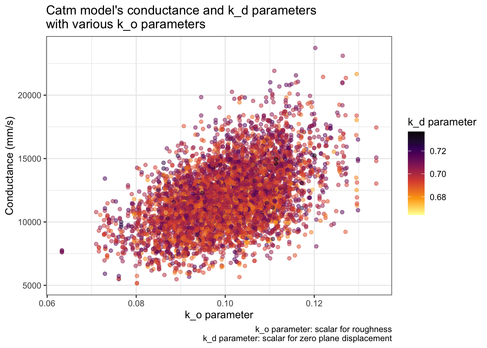
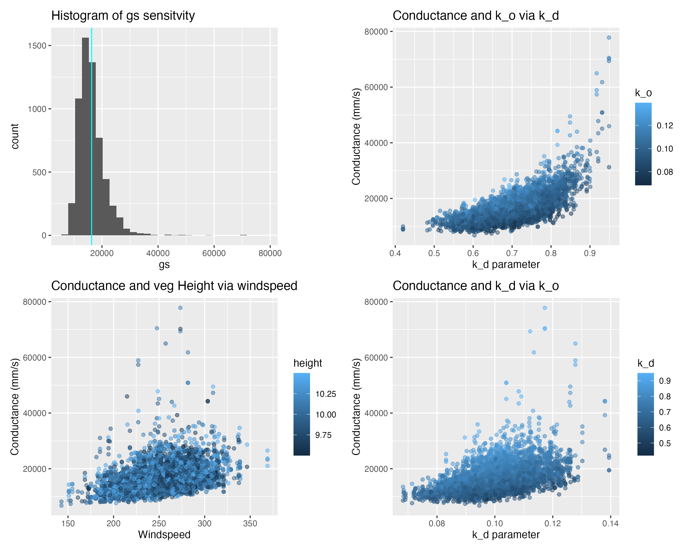

library(here)
library(tidyverse)
library(sensitivity)
library(purrr)
source(here("R/Catm.R"))
clim <- read.delim(here("data/clim.txt"), sep = " ")Sobol Sensitivity Analysis
Part 1: Sensitivity Analysis of Model Parameters.
Summarizing Paper
In Zeferina et al., 2021, they run a two sensitivity models (Morris elementary and Sobol indices) to understand the uncertainty of a 12-story office building’s cooling demand in six different climates. The model analyzed total electrify, HVAC end-use, non-HVAC, and space cooling of annual and peak demands. Compared to annual demand, peak demand typically showed more uncertainty, making it harder to predict peak loads. The ventilation rate is the dominate parameter to reduce HVAC energy in office buildings. Nevertheless, equipment and lighting densities also play a large role in sensitive to the total demand.
How sensitivity analysis contributes to understanding within environmental/management problem solving
The study’s sensitivity testing offers strategies and ideas to new building designs to reduce energy consumption in specific climates. The two models also provide evidence-based parameter rankings to understand energy efficiency and ventilation standard in the buildings for different areas. By looking into the different climates, Zeferina et al., 2021 shows that there is not a ‘one-size-fits-all’ solution. Looking at sensitivity by location is beneficial and offers better, more tailored designs. The two model variation analysis helps policymakers and building managers understand confidence bounds around energy projections for budgeting, energy efficiency, and climate mitigation.
Part 2: Atmospheric Conductance Sobol Sensitivity Analysis
Load libraries, function, and data
Set Parameters and combine into a df
Setting the wind speed (v), vegetation height (height), k_o, and k_d parameters
# Set seed
set.seed(1234)
# Set Parameters
np <- 1000 # number of samples
v <- rnorm(mean = 300, sd = 50, n = np)
height <- runif(min = 3.5, max = 5.5, n = np)
k_o <- rnorm(mean = 0.1, sd = 0.01, n = np)
k_d <- rnorm(mean = 0.7, sd = 0.01, n = np)
# Combine parameters
X1 <- cbind.data.frame(v, height, k_o, k_d)
#..........................Do it again!..........................
v <- rnorm(mean = 300, sd = 50, n = np)
height <- runif(min = 3.5, max = 5.5, n = np)
k_o <- rnorm(mean = 0.1, sd = 0.01, n = np)
k_d <- rnorm(mean = 0.7, sd = 0.01, n = np)
# Combine parameters
X2 <- cbind.data.frame(v, height, k_o, k_d)Run the model with the parameters for first order
# Create a sensitivity object
sens_Catm_Sobol <- sensitivity::sobolSalt(model = NULL,
X1, X2,
nboot = 100)
# Make object a df using the `X`
parms = as.data.frame(sens_Catm_Sobol$X)
colnames(parms) <- colnames(X1) # Change column names
# Running the model for all set parameters
res <- pmap_dbl(parms, Catm)Tell the sensitive object about the results
# Tell the sensitive object about the results
sens_Catm_Sobol <- sensitivity::tell(sens_Catm_Sobol, res, res.names = "gs")Look at sensitivity results
# S = Main effect / First order sensitivity - variance associated directly with parameter alone
rownames(sens_Catm_Sobol$S) <- colnames(parms) # change row names
#sens_Catm_Sobol$S
# T = total effect - variance associated with parameter and interaction with other parameters
rownames(sens_Catm_Sobol$T) <- colnames(parms) # change row names
#sens_Catm_Sobol$T
# Look at main and total effecrs together
print(sens_Catm_Sobol)
Call:
sensitivity::sobolSalt(model = NULL, X1 = X1, X2 = X2, nboot = 100)
Model runs: 6000
Model variance: 6253902
First order indices:
original bias std. error min. c.i. max. c.i.
v 0.65505976 -0.0005431786 0.01934133 0.62175467 0.7025337
height 0.14826017 -0.0002442694 0.03012014 0.08190891 0.2132196
k_o 0.22341045 -0.0023909112 0.02899340 0.17271131 0.2831393
k_d 0.01615381 -0.0017911161 0.03178972 -0.05896100 0.0808735
Total indices:
original bias std. error min. c.i. max. c.i.
v 0.651067650 1.521249e-03 0.0307352488 0.584255040 0.706738077
height 0.141247284 1.256140e-03 0.0090331325 0.119572169 0.156428531
k_o 0.221466662 -1.743257e-03 0.0132154411 0.200931609 0.253357039
k_d 0.004268764 1.635363e-05 0.0003290392 0.003549509 0.004865007Indices Interpretations
Main Effect: represent fraction of the output variance due to a single input parameter.
- Conductance variance is largely associated (~66%) with wind speed (v). Second most important is K_o. Whereas, vegetation height has moderate influence, and k_d has approximately no impact on the output variance.
Total effect: Variance associated with parameter and interaction with other parameters
- The total effect indices ≈ main effect indices, which means interactions between parameters are minimal. Therefore, the inputs are influencing the outcome independently and not interacting.
Plot
Plotting all parameters impacts on conductance
# Combine sensitive indicies together
sens_indicies <- cbind.data.frame(parms, gs = sens_Catm_Sobol$y)
# overall gs Sensitivity to uncertainty
ggplot(sens_indicies, aes(x = gs)) +
geom_histogram(fill = "grey50") +
geom_vline(xintercept = mean(sens_indicies$gs), col = "goldenrod", linewidth = 1.3) +
theme_minimal() +
labs(title = "Histogram of Generated Sensitivity",
x = "Generated Sensitivity",
y = "Count")`stat_bin()` using `bins = 30`. Pick better value `binwidth`.
# response of conductance to wind speed (most important variable) and height
ggplot(sens_indicies, aes(v, gs, color = height)) +
geom_point(alpha = 0.5
) +
scale_color_viridis_c(option = "viridis", direction = -1) +
labs(y = "Conductance (mm/s)",
x = "Wind speed (m/s)",
title = "Catm model's conductance and vegetation height\nwith various wind speeds",
col = "Vegetation\nheight (m)"
) +
theme_bw()
# response of conductance to the second most important variable - K_o
ggplot(sens_indicies, aes(k_o, gs, col = k_d)) +
geom_point(alpha = 0.5) +
scale_color_viridis_c(option = "inferno", direction = -1) +
labs(title = "Catm model's conductance and k_d parameters\nwith various k_o parameters",
y = "Conductance (mm/s)",
x = "k_o parameter",
col = "k_d parameter",
caption = "k_o parameter: scalar for roughness\nk_d parameter: scalar for zero plane displacement") +
theme_bw()
In class plots
knitr::include_graphics(here::here("figs", "sobol_sens_plots.png"))
Discussion
According to the Compute Atmospheric Conductance model, conductance variance is ~66% due to the wind speed input and 22% due to the k_o input (scalar for roughness). The input influences are independent of each other. With higher and more variable wind speeds and shorter vegetation height, the Sobol sensitive analysis shows wind speed and conductance have a positive relationship where as wind speed increases, conductance increases.
In class (where wind speed was lower and less variable and vegetation was taller), the sensitivity analysis showed k_d impacted the output variance the most and all other variables having minimal impact. And as k_d increased, conductance increased slightly. Wind speed had limited influence on conductance. However, in the setting with higher and more variable wind speeds, wind speed had a huge positive associationship with conductance.